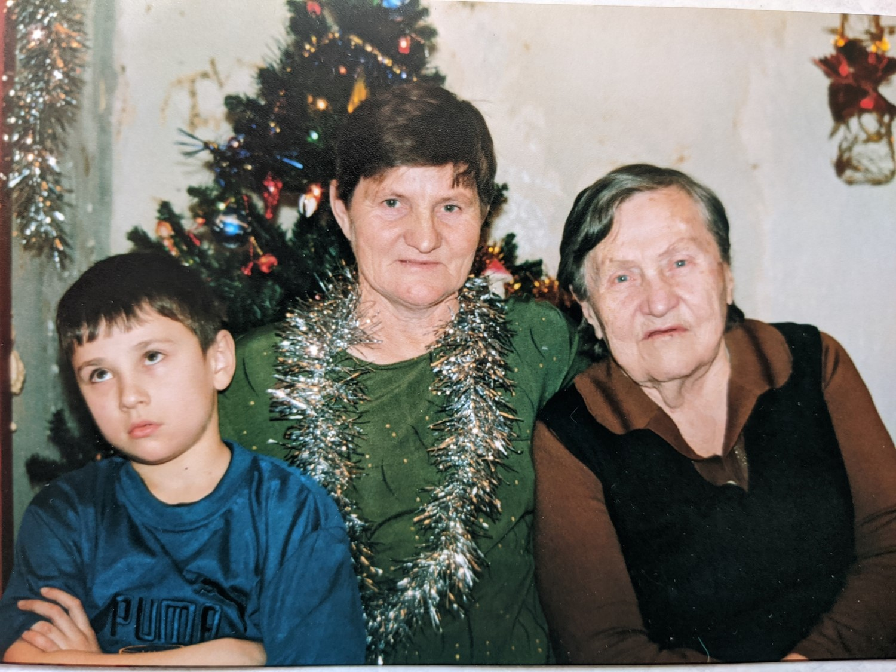

Родилась: 25.08.1918, Улан-Удэ
Умерла: 17.02.2013, Ангарск
Продолжительность жизни: 94
Место жительства: Иркутск
Основное занятие: Лаборант на спирт заводе
Место рождения: Улан-Удэ
Работала лаборант на спирт заводе в село Троицк Заларинаского района Иркутской обл. В годы ВОВ работала заведующей детским садом пос. Залари.
Ее отец работал на спиртовых заводах (Главным механиком)
Отец: Куликов Николай Дмитриевич
Мать: Куликова (Бердникова) Евдокия Александровна
Брат: Куликов 3 ребенка погибли в детстве
Сестра: Катлиренко (Куликова ) Евстолия Николаевна
Муж: Ацута Василий Алексеевич
Дочь: Ацута (Ацута) Елена Васильевна
Сын: Ацута Валентин Васильевич
Дочь: Тихова Нинна Николаевна
Новый год. |